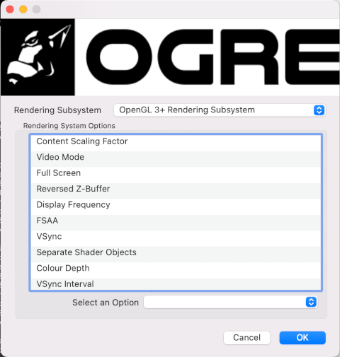
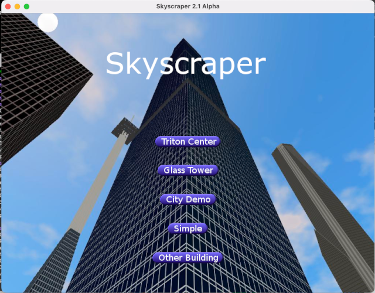

When starting Skyscraper for the first time,
you will either see the main menu or a graphics selection
window.
This is the OGRE menu:

In the Ogre menu, all you need to do is choose a rendering
system, and press OK. Skyscraper will then start.
The other options can be ignored for now.
Choose OpenGL or OpenGL3+ unless you have a
specific need for another rendering system. The options
are:
DirectX9: old DirectX renderer, has some issues,
Windows x86 only.
DirectX11: new DirectX renderer, somewhat working, used
mainly for VR support and when DirectX11 is needed.
Note that models are not supported yet with this renderer, due
to shader issues.
Available on Windows 10+, both on x86 and ARM devices.
OpenGL: Skyscraper's default, cross-platform, no shader
support
OpenGL 3+: Skyscraper's newer renderer, cross-platform,
uses RTSS shaders, doesn't support clouds in the Caelum sky
system
OpenGL ES2: not currently used, intended to be there
for future ports to mobile devices, cross-platform
Metal: experimental Mac renderer, not working
Vulkan: experimental Vulkan support (cross-platform
replacement for OpenGL), not working
For the cross-platform renderers, Skyscraper currently
supports the following platforms:
Windows 10+ x86
Windows 11 ARM
Windows 7
MacOS x86/ARM
Linux
FreeBSD

You'll see the building selection menu.
The
Triton Center is the flagship building, with a new
design introduced in version 2.0 Alpha 1.
The
Glass Tower
is the building from the 1974 movie
The Towering
Inferno, based on original film production
blueprints
City Demo launches most of the stock buildings into a
city simulation, each building running in a separate sim
engine.
Simple is a basic demonstration building used for
learning the simulator, and for creating your own buildings.
Other Building opens a building selector, for loading
buildings in Skyscraper's
buildings folder.
If you right-click this button, a native file selection window
will appear.
In this release, the Sears Tower building is not listed on the
main menu, but is available in the Other Buildings selection.
The Sears Tower is based on the original designs and
floorplans of the 108-story Sears (Willis) Tower in Chicago